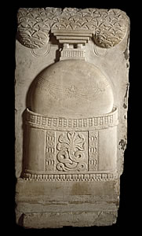

StupaWhen the Buddha died, his ashes were divided into eight parts and buried in small caskets inside dome-shaped structures called 'stupas'. For this reason, the stupa is used as a symbol of the Buddha's death.The remains of important Buddhist dignitaries were also buried in stupas. Thus, images of stupas can also represent important or great people. 
This is a stone relief from the Great Stupa at Amaravati showing a stupa. |